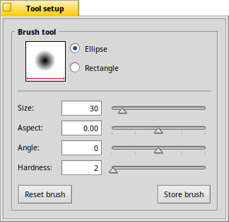

The Brush tool - B
|  |
First you decide on the shape of the brush, either or . The slider does the obvious. deforms the shape of the brush. "0" being completely circular/square, up to "-10" to "+10" squashes the brush to become taller than wide and vice-versa. will rotate the brush up to 90° to the left or right. "0" being the upright default. Alternatively, you can click-and-drag the brush in the preview box at the top. Hold SHIFT to snap to 45° angles. Lastly, sets how crisp the brush edges are. Once you've set your brush up perfectly, you can click and save the configuration to the Brushes window. The quick key to choose the brush tool is B. |
Back: The Ellipse tool Next: The Hairy Brush tool